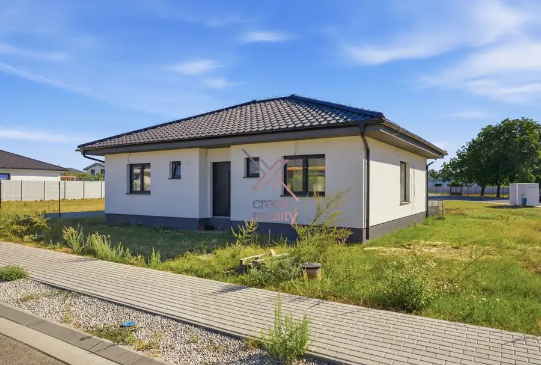
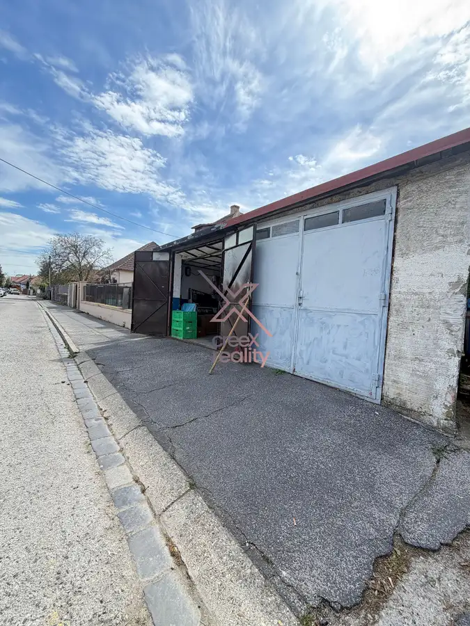
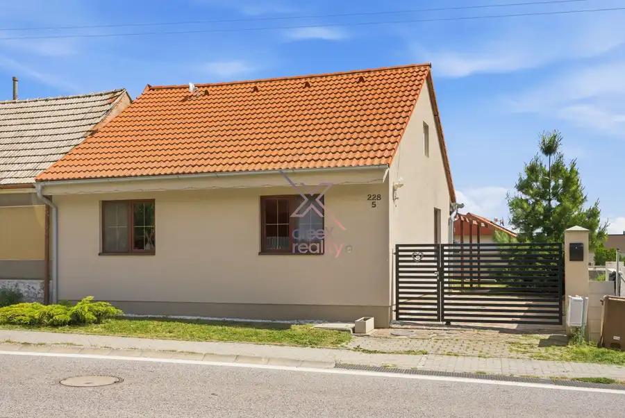

CreeX reality - 3-izbový byt po kompletnej rekonštrukcii na Hospodárskej ulici – len 2 minúty pešo do centra Trnavy
Trnava
- Dispozícia3-izbový
- Plocha70 m²
- Poschodie2. z 7
- StavKompletná rekonštrukcia
O nehnuteľnosti
3-IZBOVÝ BYT PO KOMPLETNEJ REKONŠTRUKCII NA HOSPODÁRSKEJ ULICI – LEN 2 MINÚTY PEŠO DO CENTRA TRNAVYPopis nehnuteľnostiCreeX Reality a Michal Baran Vám ponúka na predaj priestranný 3-izbový byt na Hospodárskej ulici v Trnave, ktorý zaujme predovšetkým svojou výbornou polohou, kompletnou rekonštrukciou a praktickým dispozičným riešením.Veľkou výhodou je jeho stav. Byt prešiel kompletnou rekonštrukciou približne pred rokom, pričom nešlo iba o úpravu interiéru. Vymenené boli kompletné rozvody elektriny, vody aj odpadu a zároveň bola zmenená dispozícia bytu.Rekonštrukcia zahŕňala nové stierky, stropy, podlahy, interiérové dvere, kuchynskú linku, kúpeľňu, WC, vstupnú chodbu a kompletné úpravy jednotlivých miestností. Byt tak pôsobí moderne a novému majiteľovi ponúka možnosť nasťahovať sa bez potreby ďalšej rozsiahlej rekonštrukcie.Základné parametreByt má výmeru 70 m² vrátane balkóna a nachádza sa na 2. poschodí zo 7. Bytový dom je zateplený a vybavený výťahom.Súčasťou bytu je veľký balkón, ktorý je prístupný priamo z obývacej izby. Praktickým prvkom sú aj vstavané roldorové skrine v oboch samostatných izbách, ktoré poskytujú dostatok úložného priestoru.Byt sa predáva čiastočne zariadený a je voľný ihneď.DispozíciaPo vstupe do bytu sa nachádza priestranná vstupná chodba, z ktorej sa dostaneme do jednotlivých častí nehnuteľnosti.Samostatná kuchyňa je vybavená modernou kuchynskou linkou. Súčasťou bytu je tiež kúpeľňa so sprchovým kútom a WC.Centrom bytu je priestranná obývacia izba, z ktorej je priamy východ na veľký balkón. Ten príjemne rozširuje obytný priestor a ponúka miesto na rannú kávu, posedenie či oddych.Ďalšie dve izby sú samostatné a priestranné. V oboch sa nachádza vstavaná roldorová skriňa, takže úložného priestoru je dostatok. Izby je možné využiť ako spálňu, detskú izbu, pracovňu alebo hosťovskú izbu podľa potrieb nového majiteľa.Technický stavKompletná rekonštrukcia prebehla približne pred rokom a zahŕňala aj technické rozvody. V byte boli vymenené elektrické rozvody, rozvody vody a odpadu.Okrem toho boli kompletne zrekonštruované povrchy, podlahy, stropy, interiérové dvere, kuchyňa, kúpeľňa, WC a jednotlivé obytné priestory.Bytový dom je zateplený, má výťah a byt sa nachádza na príjemnom 2. poschodí zo 7.LokalitaHospodárska ulica patrí medzi lokality, ktoré majú v Trnave jednu veľkú výhodu – centrum mesta máte prakticky za rohom.Byt sa nachádza len približne dve minúty pešej chôdze od Bernolákovej brány, a teda aj od historického centra Trnavy. Na námestie, do kaviarne, reštaurácie, obchodov či za službami sa dostanete bez toho, aby ste museli sadnúť do auta.V okolí sa nachádza kompletná občianska vybavenosť – obchody, reštaurácie, kaviarne, školy, škôlky, zdravotná starostlivosť, úrady, služby, zastávky MHD a možnosti športového či kultúrneho vyžitia. Výborná je aj dostupnosť do ostatných častí mesta a na hlavné dopravné ťahy.Názor makléraNa tomto byte sa mi páči najmä kombinácia veľmi dobrej polohy, praktickej dispozície a rozsahu rekonštrukcie.Nový majiteľ nekupuje byt, pri ktorom ho po prevzatí čaká výmena elektriny, vody, kúpeľne alebo kompletné prerábanie interiéru. Väčšina podstatných vecí bola urobená nanovo a približne pred rokom.Zároveň ide o plnohodnotný 3-izbový byt so 70 m² vrátane balkóna, dvoma veľkými samostatnými izbami, veľkou obývacou izbou, vstavanými skriňami a balkónom.A potom je tu samozrejme lokalita. Dve minúty pešo do centra Trnavy je jednoducho výhoda, ktorú oceníte každý deň – či už bývate sami, ako pár alebo ako rodina.Byt je voľný ihneď a jeho kúpu je možné financovať aj prostredníctvom hypotekárneho úveru.Obhliadky sú možné 7 dní v týždni, preto sa pokojne ozvite a dohodneme si termín, ktorý Vám bude vyhovovať.Michal Baran0905 857 580michal.baran@creexreality.skwww.creexreality.sk
Parametre
| Cena vrátane energií | Nie |
|---|---|
| Druh | 3 izbový byt |
| Dátum zverejnenia | 15. 9. 2026 |
| Energetický certifikát budovy | V príprave |
| Podlažie | 2 |
| Počet nadzemných podlaží | 7 |
| Rok výstavby | 1980 |
| Stav nehnuteľnosti | Kompletná rekonštrukcia |
| Typ | Predaj |
| Typ konštrukcie | Panelová |
| Vybavenie | Výťah |
| Úžitková plocha | 70 m² |
Kde to je


Mohlo by Vás zaujímať

DomNové10 295 000 €CreeX reality - novostavba 4-izbového bungalovu v Jaslovských Bohuniciach – pozemok 700 m² Jaslovské Bohunice 102 m² NOVOSTAVBA 4-IZBOVÉHO BUNGALOVU V JASLOVSKÝCH BOHUNICIACH – 102 m² + POZEMOK 700 m²CreeX Reality ponúka na predaj novostavbu moderného 4-izbového…
Komerčné priestoryNové4 27 000 €CreeX reality - Nová cena - garáž v širšom centre Trnavy – SpiegelSál | elektrina | 17 m² Trnava 17 m² GARÁŽ V ŠIRŠOM CENTRE TRNAVY – SPIEGELSÁL | ELEKTRINA | 17 m²Popis nehnuteľnostiCREEX REALITY Vám ponúka na predaj garáž nachádzajúcu sa vo…
DomNové10 244 000 €CREEX reality Vám ponúka na predaj moderný 4-izbový rodinný dom v obci Smolenice Smolenice 110 m² CREEX REALITY Vám ponúka na predaj moderný 4-izbový rodinný dom v obci Smolenice, ktorá patrí medzi vyhľadávané lokality na úpätí Malých Karpát. Táto…